Number Base System
In the case of a positional numeral system, a base refers to the total number of unique digits that we use to represent all the numbers. It also includes the digit zero. Now, for instance, for a decimal system, the base number is ten. It is because it utilises the ten digits ranging from 0 to 9.
What is the Base of the Number System?
The base of a number system refers to the total number of digits that are actually used in the given number system. The number system that has the base ‘b’ consists of its digits in the [0, b-1] range. This base of the number system is also known as the radix of a number system. Let us take a look at a few examples to understand this better.
Examples
We will now consider the examples given below-
Number System with Base 10
Let us consider a base 10 number system, normally known as a decimal number system, here: The total number of digits that are used in this number system is 10 since it has a base of 10. Thus, these digits would be 0, 1, 2, 3, 4, 5, 6, 7, 8, 9. The digits here lie clearly in the [0, base-1] range = [0, 9].
Number System with Base 2
Let us consider a base 2 number system normally known as a binary number system, here: The total number of digits that are used in this number system is 2 since it has a base of 2. Thus, these digits would be 0 and 1. The digits here lie clearly in the [0, base-1] range = [0, 1].
Important Note
It is critical to note that: The digits of a number system that has the base ‘b’ will always be less than ‘b’. It is clear from the [0, base-1] range in which all the digits of a number system lie.
Types of Number System
The four most generally used number systems are these: 1. Decimal 2. Binary 3. Octal 4. Hexadecimal The table given below shows what bases and digits are used in these mentioned number systems:
| Number System | Digits Used | Base |
|---|---|---|
| Decimal Number System | (Total 10 digits) 0, 1, 2, 3, 4, 5, 6, 7, 8, 9 | 10 |
| Binary Number System | (Total 2 digits) 0, 1 | 2 |
| Octal Number System | (Total 8 digits) 0, 1, 2, 3, 4, 5, 6, 7 | 8 |
| Hexadecimal Number System | (Total 16 digits) 0, 1, 2, 3, 4, 5, 6, 7, 8, 9, A, B, C, D, E, F | 16 |
Conversion to Base 10
In the case of number systems, it is very crucial that one has a
thorough knowledge of how one can convert various numbers from a
given base to another one. In this article, we will learn how we can
convert some numbers from any available base to base 10.
We can convert a number from a base to base 10 with the help of the
expansion method. Now, according to the expansion method, if mno.pq
is a given number in base x, its value in base 10 will be like this:
(mno.pq)x = (mx2 + nx + o + px-1 + qx-2)10
Explanation
If we want to use the expansion method for the process of conversion, then:
- Assign the position number to every digit of the available number.
- The digits available at the left of the decimal are numbered from 0.
- The digits available at the right of the decimal are numbered from -1.
- Write a certain term for every digit as digit x (which is the base of the given number), the digit’s position number.
- Add all the terms so as to get the number in base 10.
- We can expand this formula for any given number of digits.
Practice Problems on Conversion to Base 10
1. Convert the given numbers to base 10-
1.1. (10010)2
Answer – We use the expansion method here and we get-
(10010)2
= ( 1 x 24 + 0 x 23 + 0 x 22 + 1 x
21 + 0 x 20 )10
= ( 16 + 0 + 0 + 2 + 0 )10
= ( 18 )10
1.2. (254)8
Answer – We use the expansion method here and we get-
(254)8
= ( 2 x 82 + 5 x 81 + 4 x 80 )10
= ( 128 + 40 + 4 )10
= ( 172 )10
1.3. (AC)16
Answer – We use the expansion method here and we get-
(AC)16
= ( A x 161 + C x 160 )10
= ( 10 x 16 + 12 x 1 )10
= ( 160 + 12 )10
= ( 172 )10
1.4. (10010.101)2
Answer – We use the expansion method here and we get-
(10010.101)2
= ( 1 x 24 + 0 x 23 + 0 x 22 + 1 x
21 + 0 x 20 + 1 x 2-1 + 0 x 2-2
+ 1 x 2-3 )10
= ( 16 + 0 + 0 + 2 + 0 + 0.5 + 0.125 )10
= ( 18.625 )10
1.5. (254.7014)8
Answer – We use the expansion method here and we get-
(254.7014)8
= ( 2 x 82 + 5 x 81 + 4 x 80 + 7 x
8-1 + 0 x 8-2 + 1 x 8-3 + 4 x 8-4
)10
= ( 128 + 40 + 4 + 0.875 + 0.0019 + 0.0009 )10
= ( 172.8778 )10
1.6. (AC.FBA5)16
Answer – We use the expansion method here and we get-
(AC.FBA5)16
= ( A x 161 + C x 160 + F x 16-1 +
B x 16-2 + A x 16-3 + 5 x 16-4
)10
= ( 10 x 16 + 12 x 1 + 15 x 16-1 + 11 x 16-2 +
10 x 16-3 + 5 x 16-4 )10
= ( 160 + 12 + 0.9375 + 0.0429 + 0.0024 + 0.0001 )10
= ( 172.9829 )10
1.7. (0.1402)8
Answer – We use the expansion method here and we get-
(0.1402)8
= ( 0 x 80 + 1 x 8-1 + 4 x 8-2 + 0
x 8-3 + 2 x 8-4 )10
= ( 0 + 0.125 + 0.0625 + 0 + 0.0005 )10
= ( 0.188 )10
1.8. (0.ABDF)16
Answer – We use the expansion method here and we get-
(0.ABDF)16
= ( 0 x 160 + A x 16-1 + B x 16-2 +
D x 16-3 + F x 16-4 )10
= ( 0 x 1 + 10 x 16-1 + 11 x 16-2 + 13 x
16-3 + 15 x 16-4 )10
= ( 0 + 0.625 + 0.0429 + 0.0032 + 0.0002 )10
= ( 0.6713 )10
Hexadecimal Number System
The hexadecimal number system is a type of number system, that has a base value equal to 16. It is also pronounced sometimes as ‘hex’. Hexadecimal numbers are represented by only 16 symbols. These symbols or values are 0, 1, 2, 3, 4, 5, 6, 7, 8, 9, A, B, C, D, E and F. Each digit represents a decimal value. For example, D is equal to base-10 13.
The list of 16 hexadecimal digits with their equivalent decimal, octal and binary representation is given here in the form of a table, which will help in number system conversion. This list can be used as a translator or converter also.
Hexadecimal Number System Table
Below is the table of hexadecimal number systems with equivalent values of the binary and decimal number systems.
| Decimal Numbers | 4-bit Binary Number | Hexadecimal Number |
|---|---|---|
| 0 | 0000 | 0 |
| 1 | 0001 | 1 |
| 2 | 0010 | 2 |
| 3 | 0011 | 3 |
| 4 | 0100 | 4 |
| 5 | 0101 | 5 |
| 6 | 0110 | 6 |
| 7 | 0111 | 7 |
| 8 | 1000 | 8 |
| 9 | 1001 | 9 |
| 10 | 1010 | A |
| 11 | 1011 | B |
| 12 | 1100 | C |
| 13 | 1101 | D |
| 14 | 1110 | E |
| 15 | 1111 | F |
Basic Operations in Number Bases
Addition:
This is done by writing the remaining value when the number base or its multiple is taken from a number while the number of such base is transferred to another digit as a whole number
Examples:
1. Add in base ten: 639 + 683
Solution:
First, add the 9
and the 3 in the units column, giving 12. Twelve is one set of ten
plus 2, so place the 2 in the answer line in the units column and
carry the 1 for one set of ten to the tens column.
Then, add the numbers in the tens column, giving 12. This is 10 sets of 10 plus 2 sets of ten. Place the 2 in the answer line in the tens column and carry a one to the hundreds column since 10 sets of 10 is one set of 100.
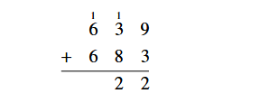Finally, add the numbers in the hundreds column, giving 13. This is 10 sets of 100 plus 3 sets of 100. The 3 sets of 100 is a 3 in the hundreds column in the answer line. The 10 sets of 100 is one set of 1000, so this 1 goes in the thousands column in the answer.
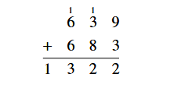The final answer is 1322.
The same “carrying” technique can be used to add multi-digit numbers in a place value system with any base. However, remember that in a base b, we carry one group of b over to the next place instead of one group of ten. Considering our example of 6 plus 7, 68 + 78is one group of 8 with 5 left over, or 68 + 78 = 158 .
2. Add in base 7: 1537 + 2167
Solution:
First, write the addition problem in column form. Adding starts with
the units column on the right just as in base ten. Since 3 + 6 = 9
and 9 is one set of 7 plus 2 extras units, the 2 goes in the units
column of the answer line and the one set of 7 is “carried over” to
the next column of sets of 7.
Next, add the numbers in the seven's column, 1 + 1 + 5 = 7. Since seven sets of seven is one set of 49 with nothing left over, carry the 1 to the next column over and put a 0 in the answer line in the second column.
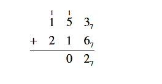Then add the numbers in the left column, 1 + 1 + 2 = 4
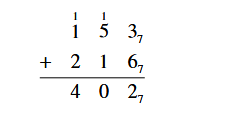Since this number is less than 7, there is no need to carry anything to the next column, and our answer is 4027
3. Add in base 16: A2816 + 73916
Solution:
First, write the addition problem in column form. Then add the
numbers in the rightmost column. Since 8 + 9 is 17, which is one set
of 16 plus 1 left over, write the remainder 1 in the answer line
under the right column and add the 1 set of 16 to the next column.
Next, add the second column. Since 1 + 2 + 3 is 6 which is less than 16, simply put the 6 in the answer line for the second column.
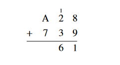Finally, add A + 7 . From the base 16 chart earlier in this section, we know that A represents the Hindu-Arabic number 10. Since 10 + 7 = 17 which is one set of 16 plus 1, put the remainder 1 under the A and 7 column. Place the one set of 16 as the first digit in the answer.
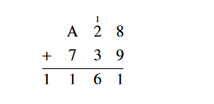Thus, A2816 + 73916 = 116116
4. Add in base 2: 110112 + 1011012
Solution:
Adding column by column staring with the units column on the right,
and carrying a set of two to the next column, the addition is shown
below.
Thus, 110112 + 1011012 = 10010002
Subtraction:
The algorithm used for subtraction of multi-digit numbers is the borrowing algorithm that reverses the “carrying” procedure for addition.
Examples:
1. Subtract 223 – 186.
Solution
First write the problem in column form. Remember that we start by
subtracting the numbers in the units column. Since 3 is smaller than
6, we cannot directly subtract and get a positive answer. Therefore,
we “borrow” one set of ten from the tens column and break it up into
10 units. Adding those ten units to the three already there gives
thirteen. Then, we can easily subtract 13 – 6.
Since we borrowed one of the two sets of ten in the tens column, we only have one set left. This is why the 2 in the middle column is scratched out and the one left is written above it. The next step is to subtract the numbers in the tens column. As before, we cannot subtract 1 – 8 and get a positive answer. So, we borrow one set of 100 from the hundreds column and break it up into ten sets of 10. This gives 10 + 1 = 11 sets of ten for the top number in the tens column. Now we subtract 11 – 8 = 3. Since we borrowed one set of 100, we now only have 1 set of 100 in the hundreds column for the top number. This is why the 2 is crossed out with a one on top of it.
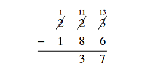Finally, subtract the hundreds column.
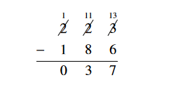Leading zeroes do not change a number, so the answer is simply 37.
The basic concept is to “regroup” the larger number so that the subtraction is reduced to subtraction between the digits in each place of the two numbers. This same procedure works for subtracting numbers in any place value system.
2. Subtract in base 7: 5367 - 2457
Solution:
To subtract, first write the problem in column form.
Begin subtracting with the units place. Since 6 is bigger than 5, we can simply subtract and record our answer in the answer line.
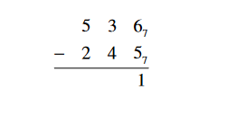 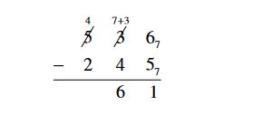 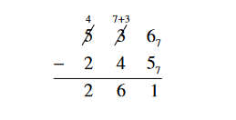The final answer is 2617
3. Subtract in base 5: 14235 - 4245.
Solution
First, write the problem in column form:
The final answer is 4445
4. Subtract in base 16: 5B216 - 17C16.
Solution
Write the problem in column form. Also look up B and C on the base
16 chart and find B = 11 and C = 12 .
Since 2 is smaller than C, we must borrow one set of 16 from the 161 column to be able to subtract in the units column. Borrowing 1 from B leaves 11 - 1 = 10 = A sets of 16 left. Adding the 16 to the 2 in the units column gives 18 - 12 = 6.
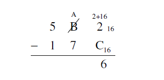The remainder of the subtraction may be performed without any borrowing.
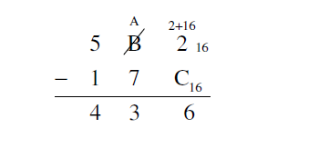The final answer is 43616
5. Subtract in base 2: 1101112 - 110012
Solution
First, write the problem in column form.
Next, begin subtracting from the units place on the right. If the top digit is larger than the bottom digit, simply subtract.
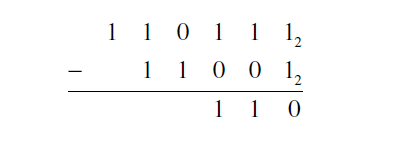The procedure works the same way in any base, so at this point we need to borrow from the next column. Just remember that in base 2 we are borrowing sets of 2 and multiples of 2. The rest of the subtraction is below.
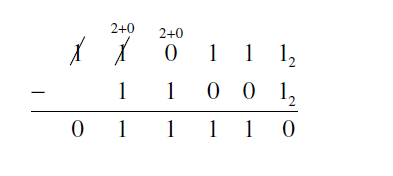The final answer is 111102
Multiplication:
One of the challenges of elementary school is to learn the multiplication table up to ten times ten. This is actually a complicated task. First, the student must understand that multiplication is faster addition and 8 X 9 is the number of total objects in 8 sets of 9 things each. Then, the student has to express this quantity as a base ten number. Since 8 sets of 9 things do not “naturally” separate themselves into 7 sets of ten plus 2 left over, learning these facts takes a significant amount of memorization. Fortunately, once these facts are mastered, the algorithm for multiplying multi-digit numbers is not much harder than the procedure for addition.
Multiplication in other bases uses a similar algorithm. The first step is to determine the products of all the single digits express as numbers in the base.
Examples:
1. Multiply 328 X 58
Solution
First write the multiplication problem in column form.
Begin by multiplying the units digits. By the base 8 multiplication table, 58 X 28 = 128. This is one set of 8 plus 2 extra. The 2 goes in the units column of the answer. The 1 set of 8 is placed above the 81 column.
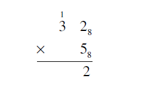The next step is to multiply 38 X 58 = 178 Adding the one from the units multiplication gives 178 X 18 = 208. The 20 is what goes in the answer line.
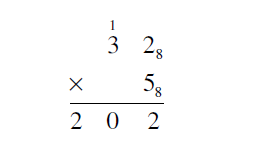The final answer is 2028.
2. Multiply 2213 X 23
Solution
Write the problem in column form and begin by multiplying the units
digits
Next, multiplying in the 31 column gives 23 X 23 = 113. The units digit of this answer goes in the 31 column place in the answer, the 3’s digit gets carried over to the next column and added to the multiplication result.
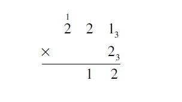Multiplying in the 32 column and adding the extra 1 is 23 X 23 + 13 = 113 + 13 = 123. The 12 is what finishes the answer line.
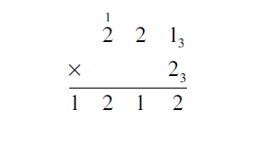The final answer is 12123